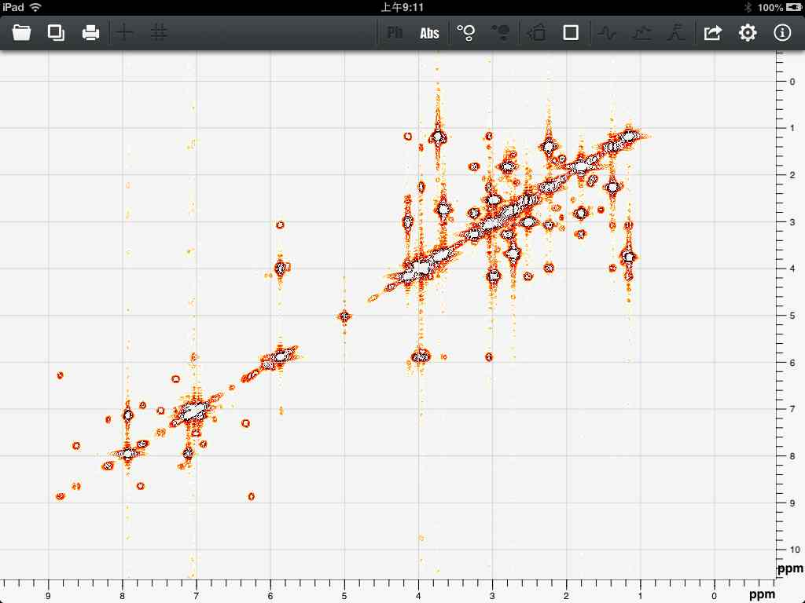
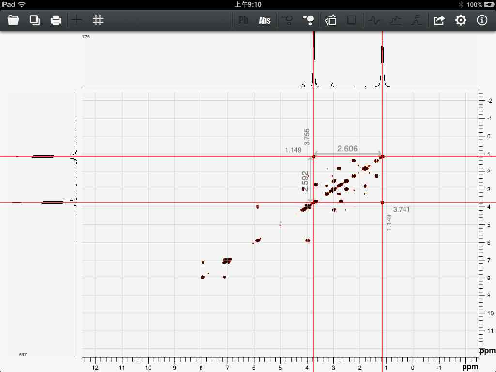
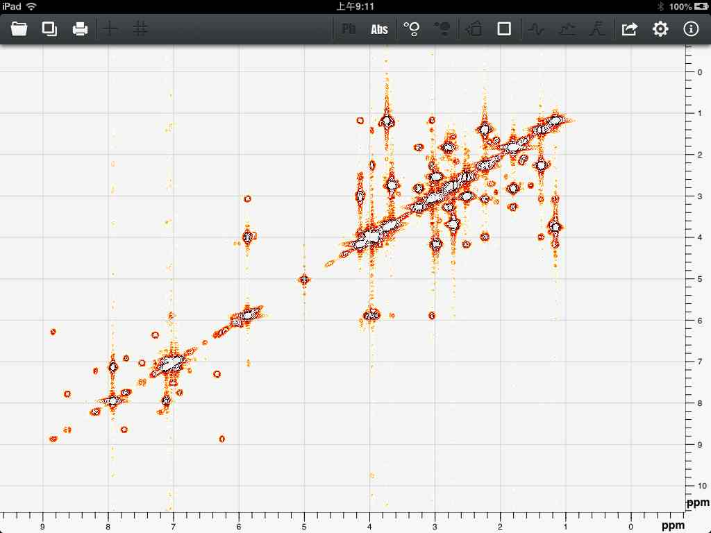
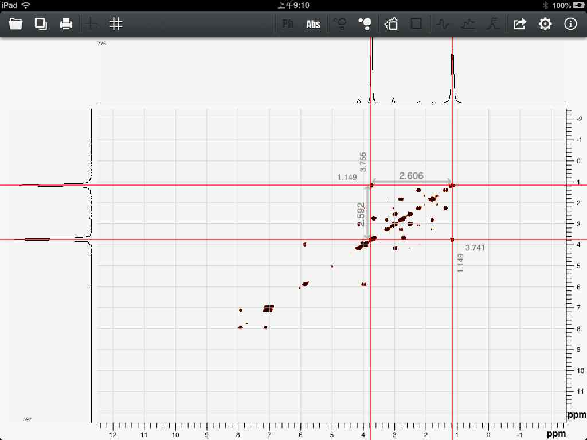

User Guide of Touch NMR
For version 2.0, Touch NMR can handle basic 2D FFT.(Hypercomplex FFT and more advanced features will be supported in following versions.)
There are three major controls for 2D spectrum. Users can choose to see projections view or full spectrum view, plot or contour, phase sensitive or absolute value. As is shown in figure 37, it is the contour view of full spectrum with absolute values.

Figure 37
The cursors for 2D spectrum are cross. Also there are two kind of cursors single cross and double cross. As shown in figure 38.

Figure 38
There are three major controls for 2D spectrum. Users can choose to see projections view or full spectrum view, plot or contour, phase sensitive or absolute value. As is shown in figure 37, it is the contour view of full spectrum with absolute values.

Figure 37
The cursors for 2D spectrum are cross. Also there are two kind of cursors single cross and double cross. As shown in figure 38.

Figure 38